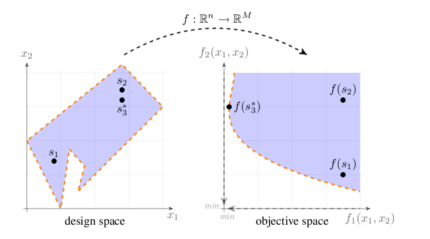
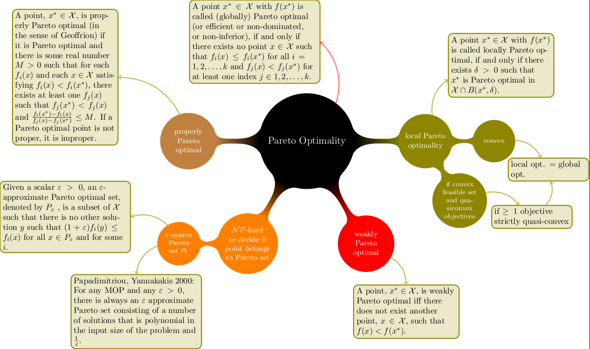

23 Multi Objective Optimization
Optimization problems with more than one criterion are treated in OPAL as multi-objective optimization problems. The legacy implementation is based on opt-pilot, integrated into OPAL.
23.1 Definition
A general multi-objective optimization problem is written as
\[ \begin{aligned} \min \quad & f_m(\mathbf{x}), & m &= \{1, \ldots, M\}, \\ \text{subject to} \quad & g_j(\mathbf{x}) \ge 0, & j &= \{1, \ldots, J\}, \\ & -\infty \le x_i^L \le x_i \le x_i^U \le \infty, & i &= \{0, \ldots, n\}. \end{aligned} \tag{23.1}\]
The objectives are minimized over a bounded design space, optionally subject to constraints. OPAL treats the mapping from design variables to objective space as a black-box evaluation driven by accelerator simulations.

23.2 Pareto Optimality
In most practical cases the objectives are conflicting, so no single design point minimizes all objectives at once. The optimization therefore seeks a set of non-dominated points approximating the Pareto front.
The legacy discussion emphasizes the dominance relation:
- a solution dominates another if it is no worse in all objectives
- and strictly better in at least one objective
This is the ordering relation that drives the multi-objective search.

23.3 MOGA Theory
The chapter frames the optimizer as a multi-objective genetic algorithm workflow. The focus is practical rather than theoretical: population management, mutation, crossover, and evaluation of the objective and constraint expressions on top of ordinary OPAL simulations.
23.4 Optimiser OPAL Commands
The optimization workflow is defined by:
DVARfor design variablesOBJECTIVEfor the quantities to minimizeCONSTRAINTfor admissibility conditionsOPTIMIZEfor the optimization run itself
23.4.1 Basic Syntax
Design variables are introduced one by one:
d1: DVAR, VARIABLE="x1", LOWERBOUND=-1.0, UPPERBOUND=1.0;
d2: DVAR, VARIABLE="x2", LOWERBOUND=-1.0, UPPERBOUND=1.0;
d3: DVAR, VARIABLE="x3", LOWERBOUND=-1.0, UPPERBOUND=1.0;Objectives are then defined as expressions to minimize:
obj1: OBJECTIVE, EXPR="-statVariableAt('energy', 1.0)";
obj2: OBJECTIVE, EXPR="statVariableAt('emit_x', 1.0)";and constraints in the same expression language:
con1: CONSTRAINT, EXPR="statVariableAt('rms_x', 1.0) < 1.0";
con2: CONSTRAINT, EXPR="statVariableAt('numParticles', 1.0) > 1000";Template files must contain placeholder variables such as _x1_ for the corresponding DVAR entries.
23.4.2 OPTIMIZE Command
OPTIMIZE starts the optimization run.
Important attributes include:
| Attribute | Meaning |
|---|---|
INPUT |
Path to the template or input file |
OUTPUT |
Base name for generated result files |
OUTDIR |
Output directory for generations and results |
OBJECTIVES |
List of objective definitions |
DVARS |
List of design variables |
CONSTRAINTS |
List of constraints |
INITIALPOPULATION |
Initial population size |
STARTPOPULATION |
Optional restart population in JSON format |
NUM_MASTERS |
Number of master ranks |
NUM_COWORKERS |
Number of worker ranks per individual |
DUMP_DAT |
Dump legacy plain-text generation format |
DUMP_FREQ |
Generation dump frequency |
DUMP_OFFSPRING |
Dump offspring instead of parents |
NUM_IND_GEN |
Individuals per generation |
MAXGENERATIONS |
Maximum number of generations |
EPSILON |
Hypervolume tolerance |
EXPECTED_HYPERVOL |
Reference hypervolume |
HYPERVOLREFERENCE |
Hypervolume reference point |
CONV_HVOL_PROG |
Hypervolume-based convergence threshold |
ONE_PILOT_CONVERGE |
Single-pilot convergence mode |
SOL_SYNCH |
Solution-exchange frequency |
INITIAL_OPTIMIZATION |
Speed up generation of the first population |
BIRTH_CONTROL |
Enforce strict population sizes |
MUTATION_PROBABILITY |
Mutation probability per individual |
MUTATION |
Mutation type |
GENE_MUTATION_PROBABILITY |
Mutation probability per gene |
RECOMBINATION_PROBABILITY |
Crossover probability |
CROSSOVER |
Crossover model |
SIMBIN_CROSSOVER_NU |
Simulated binary crossover parameter |
SIMTMPDIR |
Simulation scratch directory |
TEMPLATEDIR |
Template directory |
FIELDMAPDIR |
Field-map directory |
DISTDIR |
Distribution directory |
RESTART_FILE |
Optional H5 restart file |
RESTART_STEP |
Restart step inside the H5 restart file |
23.4.3 DVAR Command
DVAR defines a design variable.
| Attribute | Meaning |
|---|---|
VARIABLE |
Variable name used in the template |
LOWERBOUND |
Lower admissible value |
UPPERBOUND |
Upper admissible value |
23.4.4 OBJECTIVE Command
OBJECTIVE defines one quantity to minimize.
| Attribute | Meaning |
|---|---|
EXPR |
Objective expression |
23.4.5 CONSTRAINT Command
CONSTRAINT defines one admissibility condition.
| Attribute | Meaning |
|---|---|
EXPR |
Constraint expression |
23.4.6 Available Expressions
The expression language supports both ordinary mathematical functions and data accessors for simulation output.
Standard mathematical functions include:
sqrtpowexplogceilfloorfabsfmodsinasincosacostanatansq
The legacy manual also documents output-access functions such as:
fromFile(file)sddsVariableAt(var, refpos, sdds_file)sddsVariableAt(var, refvar, refpos, sdds_file)statVariableAt(var, refpos)statVariableAt(var, refvar, refpos)sumErrSq(meas_file, var_name, sdds_file)radialPeak(file, turn)sumErrSqRadialPeak(meas_file, sim_file, begin, end)probVariableWithID(var, id, probe_file)septum(probe)
These allow optimization directly against .stat, SDDS, probe, and measurement-derived quantities.
23.4.7 Example Input File
The original manual includes a full example based on the files 05-DL_QN3.in and tmpl/05-DL_QN3.tmpl. The example optimizes three quadrupole strengths through DVAR definitions, evaluates beam statistics as objectives, and runs OPTIMIZE with a small initial population and generation count.
The corresponding runtime pattern is:
OPTIMIZE, INPUT="tmpl/05-DL_QN3.tmpl", OBJECTIVES={...}, DVARS={...},
INITIALPOPULATION=5, MAXGENERATIONS=3, NUM_IND_GEN=3,
NUM_MASTERS=1, NUM_COWORKERS=1, TEMPLATEDIR="tmpl",
FIELDMAPDIR="fieldmaps", OUTPUT="optLinac", OUTDIR="results";23.4.8 Output
The optimizer writes generation data in JSON format and optionally in the legacy plain-text format. The Pareto-front data are written to ParetoFront_.json, while runtime logs such as opt.trace.0, opt-progress.0, and pilot.trace.0 record job dispatch and validity.
This optimization feature is not yet available in OPALX.